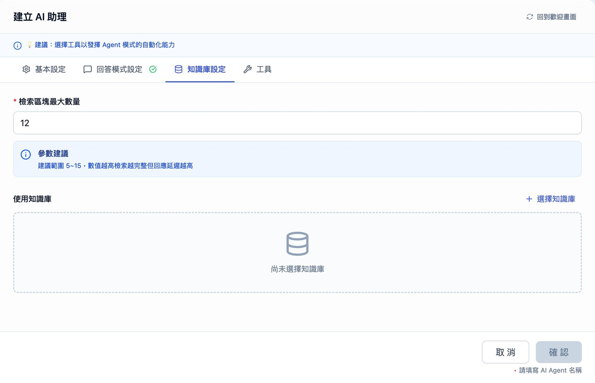
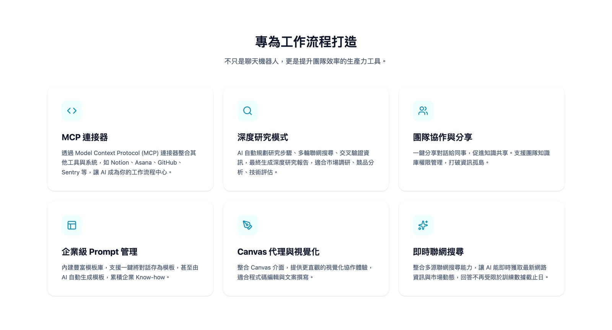

MaiGPT
The company's enterprise AI platform, used by enterprise customers adopting AI and the admins who manage it. I owned front-end product decisions and their implementation.
Front-end product work
Two phasesFirst the advanced features: prompt template management, conversation sharing, and the knowledge-base setup flow. Creating a knowledge base used to start from several different places, so users had to identify the right page before they could begin; I moved it into one entry point, with empty-state guidance and an automatic return once you are done. The template library later went through a full round of improvements.
Then the AI Store rebrand and Skills integration: a reworked skill taxonomy, layered display, and the page hierarchy cut from six levels to three, halving the clicks between opening the store and seeing what a skill actually does. Plus an overview tab and a redesigned filter.
Specs and PRDs
Two feature PRDsI owned two PRDs, for conversation sharing and the prompt template library. Before writing either, I laid out the user flows and interface drafts in Figma — checking the path actually works before committing it to a document, so the spec does not turn out to have a dead end in it.
The full scope for conversation sharing was too large to ship in one cycle, so I also wrote a reduced and a minimal version, and the minimal one is what went in.
The product spec sheet I rewrote after finding the previous version had been written from documents rather than from using the product. I clicked through every screen in the admin and wrote it again.
Where it helps, I build a working version for the team to react to rather than describing it in a document.
Built with AI-assisted development (Claude Code).


